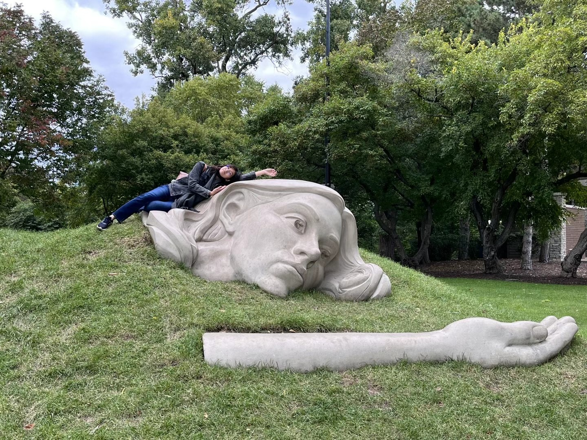
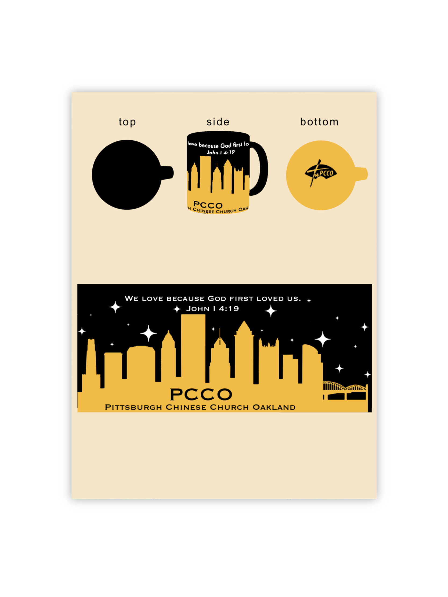

Human-Centered Design
I focus on crafting intuitive interfaces that make technology feel personal and accessible. Every pixel, word, and flow matters in the experience I build.
Curious Explorer
From UX to XR to accessibility, I’m always exploring new ways design can support real human needs—and make tech more welcoming to everyone.
Services
UX Research
Conducting user interviews, usability tests, and journey mapping to ground designs in real insights.
Interaction & Visual Design
Building intuitive interfaces, wireframes, and visual systems that tell clear and engaging stories.
Emerging Tech Exploration
Exploring AI, XR, and accessibility tools to imagine the next frontier of human-centered digital spaces.

Graphic Design Projects
Designed mugs, event posters, brochures, and YouTube branding for community and nonprofit events. Each piece carried a playful but intentional message.

Collaborations & Freelance
Worked with organizations like Ambassador for Christ, Inc. to create illustrations for Christmas productions, blending storytelling with visual warmth.